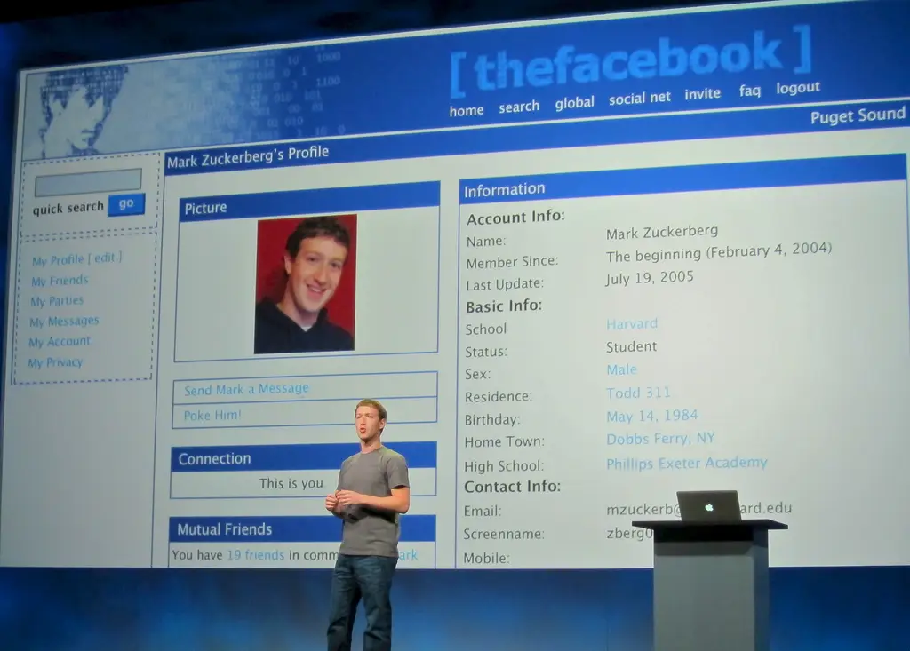
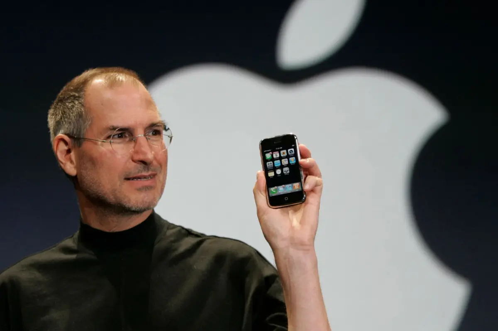

From Humble Beginnings...
From the
dot-com boom in the late 1990s to today's seamless streaming, social
media, and AI-driven world,
the internet has radically evolved over the last three decades. This timeline
section takes you through the pivotal moments of that journey, highlighting
the technologies and events that shaped the online world we know today.
Dot-com Boom (1995 - 2004)
The Dot-com Boom era marked the beginning of the commercial internet age, characterized by rapid growth, speculation, and the establishment of foundational technologies that would support future digital innovations (Kroll et al., 2010). This period saw the transformation of the internet from an academic and military network into a global commercial platform that would revolutionize business, communication, and daily life. During this era, entrepreneurs and investors rushed to capitalize on the potential of the World Wide Web, leading to both spectacular successes and dramatic failures. The period was defined by the belief that traditional business models were obsolete and that internet-based companies could achieve rapid growth and profitability. While the dot-com bubble eventually burst in 2000, the technological infrastructure and digital literacy developed during this time laid the groundwork for all subsequent internet innovations.
 Image by Canva
Image by Canva
The World Goes Online
1995 - 2004
The Dot-com Boom era marked the beginning of the commercial internet age, characterized by rapid growth, speculation, and the establishment of foundational technologies that would support future digital innovations (Kroll et al., 2010). This period saw the transformation of the internet from an academic and military network into a global commercial platform that would revolutionize business, communication, and daily life. During this era, entrepreneurs and investors rushed to capitalize on the potential of the World Wide Web, leading to both spectacular successes and dramatic failures. The period was defined by the belief that traditional business models were obsolete and that internet-based companies could achieve rapid growth and profitability. While the dot-com bubble eventually burst in 2000, the technological infrastructure and digital literacy developed during this time laid the groundwork for all subsequent internet innovations.
This era established several fundamental technologies and business models that continue to influence the digital landscape today. E-commerce platforms emerged, transforming retail and consumer behavior. Search engines evolved to help users navigate the rapidly expanding web. Online banking and digital payment systems began to challenge traditional financial institutions, something that created the foundation for the digital economy we know today. The era also witnessed the democratization of information and communication. Email became ubiquitous, websites proliferated across every industry, and the concept of “going online” became a normal part of daily life for millions of people worldwide (Hoffman & Novak, 1996). This period established the internet as an essential utility, setting the stage for the mobile and social media revolutions that would follow.

Image by Business Insider
The Birth of Social Media (Facebook Launch)
2004
Facebook was started at Harvard University in 2004 by Mark Zuckerberg and his college roommates Eduardo Saverin, Andrew McCollum, Dustin Moskovitz, and Chris Hughes with the aim of connecting classmates on campus. The platform quickly grew in popularity on campus, and soon expanded to other Ivy league universities like Yale and Stanford, and eventually opened to the public allowing anyone above age 13 to sign up using a valid email address ('History of Facebook', 2025).
The launch and exponential growth in popularity of Facebook truly ushered in the age of social media, paving the way for other internet products that aimed to connect people in one way or the other (through photos, videos, stories, etc). Since the platform encouraged connection through setting up of profiles where users entered personal data, concerns over privacy policy, especially Facebook’s collection and use of private data, began to surface, and these concerns are persistent even to this day.
Social Media & Mobile (2005 - 2014)
The Social Media & Mobile Revolution era fundamentally transformed how people connect, share information, and access digital services, as it marked the transition from static web pages to dynamic, user-generated content platforms and from desktop-bound internet access to ubiquitous mobile connectivity. This era was characterized by the democratization of content creation and the emergence of social networks as primary communication channels. The combination of improved mobile technology and social platforms created new forms of digital interaction that blurred the lines between online and offline experiences. The period established social media as a dominant force in communications, marketing, entertainment, and even political discourse.
 Image from Web Design Museum
Image from Web Design Museum
YouTube Launches
2005
Following the successful launch of Facebook, another social media platform, YouTube, was introduced in 2005, with an aim to revolutionize how people consume and create video content. For the first time, anyone with a camera and internet connection could broadcast to a global audience without traditional media gatekeepers.
Unlike Facebook that made social interactions easier, allowing people to 'meet' and connect without physical interaction, YouTube effectively democritized video publishing. This democratization of video publishing, as Mostafa et al. (2023) explains, transformed entertainment, education, and communication. Apart from entertainment, YouTube created new career paths for content creators, changing how businesses approach marketing, and establishing video as the dominant form of online content.

Image from New York Post
iPhone Changes Mobile Internet Forever
2007
The introduction of the iPhone in 2007 represents one of the most significant technological breakthroughs of the modern era. By combining a phone, internet browser, media player, and application platform into a single, intuitive device, Apple redefined user expectations for mobile technology and accelerated the adoption of mobile internet services.
The impact of the iPhone was immediately apparent in user behavior (Vitak, 2008). Mobile internet usage surged as people gained access to email (Wallace et al., 2012), web browsing, and applications from anywhere (Bastawrous et al., 2013). The device’s touchscreen interface and intuitive design made advanced computing accessible to users regardless of technical expertise, dramatically expanding the potential user base for digital services. The introduction of the App Store created an entirely new economic ecosystem, enabling developers worldwide to create and distribute mobile applications to millions of users. This marketplace model influenced how software is developed, distributed, and monetized across all computing platforms.
Image from Shutterstock
Bitcoin White Paper Released
2009
The release of Satoshi Nakamoto's Bitcoin white paper introduced the world to cryptocurrency and blockchain technology, proposing a peer-to-peer electronic cash system that operates without central authority (Nakamoto, 2008). This innovation challenged traditional financial systems and introduced new concepts of digital ownership and decentralized governance. Bitcoin's underlying blockchain technology proved to have applications far beyond cryptocurrency, introducing concepts of distributed ledgers, smart contracts, and decentralized networks that continue to influence technology development today.
The success of cryptocurrency demonstrated the viability of decentralized digital systems and inspired thousands of subsequent blockchain projects. Nonetheless, there were also growing concerns about privacy, financial sovereignty, and the role of traditional institutions in the digital age. These themes would become increasingly important as digital platforms gained greater influence over economic and social activities.
Image from TechCrunch
Instagram Launches
2010
The launch of Instagram in 2010 capitalized on the convergence of smartphone adoption, improved mobile cameras, and social networking trends. By focusing specifically on photo sharing with intuitive filters and editing tools, Instagram made high-quality visual content creation accessible to everyday users. The platform emphasizes visual storytelling, hence transforming how people share experiences and how businesses engage with customers. The rapid growth of Instagram clearly shows the changing patterns of social media usage, with users increasingly preferring visual platforms over text-based networks.
Instagram's entry into the scene at the close of the decade cemented the foundation for today's connected world. The combination of ubiquitous mobile internet access and sophisticated social platforms created new forms of digital interaction that became integral to personal, professional, and commercial activities. However, just like with it's predecessors, the adoption of Instagram meant the creation of another avenue for the proliferation of challenges related to privacy, digital addiction, and the spread of misinformation. Moreover, the concentration of communication and commerce within a few major platforms started raising questions about digital monopolies and the need for regulation that continue to influence policy discussions today.
Streaming, AI, & 5G (2015 - Present)
Streaming, AI, & 5G is characterized by the maturation of digital platforms and the emergence of artificial intelligence as a transformative force. This period has seen the convergence of high-speed connectivity, sophisticated algorithms, and massive datasets to create increasingly personalized and intelligent digital experiences. This era is distinguished by the shift from discrete digital tools to integrated ecosystems that anticipate user needs and adapt to individual preferences. The combination of streaming services, AI-powered recommendations, and ubiquitous connectivity has created a seamless digital environment that extends across devices and platforms.
 Image from Adobe Stock
Image from Adobe Stock
Netflix Streaming Dominates TV Habits
2015
By 2015, Netflix had successfully transitioned from a DVD rental service to the dominant force in streaming entertainment, fundamentally changing how people consume television and film content. The platform's success demonstrated the viability of on-demand, subscription-based content delivery and inspired numerous competitors to adopt similar models.
The impact of this transformation extended beyond entertainment consumption to content creation. Netflix’s investment in original programming challenged traditional media companies, a good example of how technology companies could successfully compete in content production. The success of streaming also accelerated the decline of traditional cable television and established new patterns of media consumption. Binge-watching became a cultural phenomenon, and the concept of scheduled programming became increasingly obsolete for younger audiences.
Image from TechCrunch
Pokémon Go Shows Power of AR
2016
The launch of Pokémon Go in 2016 brought augmented reality technology to mainstream audiences for the first time.
The unprecedented success of Pokémon Go proved that mobile technology could create new forms of entertainment and social interaction. Pokémon Go's impact was immediately visible in changed behavior patterns, as millions of players explored their neighborhoods and cities in search of virtual creatures.
Image from Adobe Stock
COVID-19 Accelerates Remote Work, Video Calls, and E-commerce
2020
The COVID-19 pandemic served as a massive accelerator for digital transformation, as it forced rapid adoption of remote work technologies, video conferencing platforms, and e-commerce services. Within months, behaviors and business practices that might have taken years to evolve became essential for maintaining operations during lockdowns.
The impact of the pandemic on technology adoption was unprecedented in its speed and scope. Video conferencing platforms like Zoom experienced explosive growth as they became essential for everything from business meetings to social gatherings. E-commerce adoption accelerated as consumers shifted purchasing online, and digital payment systems became preferred methods for contactless transactions.
Illustration by Salesforce
AI Chatbots Enter Mainstream
2023 -
The launch of ChatGPT and similar AI chatbots in late 2022 and throughout 2023 kick-started mainstream artificial intelligence adoption. With these conversational AI systems, capabilities that seemed almost magical to many users, became reality, as they can generate human-like text for a wide variety of tasks and queries. Users quickly discovered applications ranging from creative writing assistance to code generation, but of course, with some limitations and biases in AI responses.
The successful launch and usage of conversational AI systems triggered a new wave of investment and development in artificial intelligence across all technology companies, something akin to the Dot-com bubble in the late 1990s. The integration of AI capabilities into existing platforms and services became a competitive necessity, accelerating the development of AI-powered features across the technology landscape. However, it didn't take long before pertent questions about privacy, employment, and the concentration of power in technology companies started arising, moreso around mass layoffs in the name of replacing humans with more efficient AI systems and chatbots. And so as we look forward to what the future holds, one thing remains certain: the integration of AI into critical systems and decision-making processes requires careful consideration of bias, transparency, and accountability. As AI becomes more sophisticated and widespread, society must develop new frameworks for governing their development and deployment.
References
Bastawrous, A., & Armstrong, M. J. (2013). Mobile health use in low- and
high-income countries: an overview of the peer-reviewed literature. Journal
of the Royal Society of Medicine, 106(4), 130–142.
https://doi.org/10.1177/0141076812472620
Hoffman, D. L., & Novak, T. P. (1996). Marketing in hypermedia
computer-mediated environments: Conceptual foundations. Journal of
marketing, 60(3), 50-68.
Kroll, C. A., Lee, D., & Shams, N. (2010). The dot-com boom and bust in the
context of regional and sectoral changes. Industry and Innovation, 17(1),
49-69.
Mostafa, M. M., Feizollah, A., & Anuar, N. B. (2023). Fifteen years of
YouTube scholarly research: knowledge structure, collaborative networks, and
trending topics. Multimedia tools and applications, 82(8), 12423–12443.
https://doi.org/10.1007/s11042-022-13908-7
Nakamoto, S. (2008). Bitcoin whitepaper. URL:
https://bitcoin.org/bitcoin.pdf-(: 17.07. 2019), 9, 15.
Vitak, J. (2008). Mobile internet moves into the mainstream. Pew Research
Center.
https://www.pewresearch.org/internet/2008/03/25/mobile-internet-moves-into-the-mainstream
Wallace, S., Clark, M., & White, J. (2012). 'It's on my iPhone': attitudes
to the use of mobile computing devices in medical education, a mixed-methods
study. BMJ open, 2(4), e001099.
https://doi.org/10.1136/bmjopen-2012-001099
History of Facebook. (2025, August 24). In Wikipedia.
https://en.wikipedia.org/wiki/History_of_Facebook